Obby
- 작성자 : 최지원
목표
- 아래와 같은 게임을 제작합니다.
1단계. 프로젝트 생성 및 준비
Roblox Studio를 실행한 후 새로 만들기에서 Baseplate를 클릭합니다.
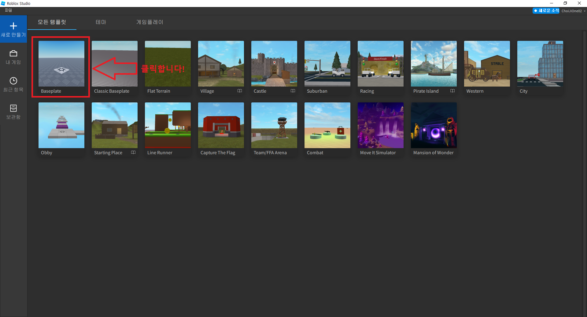
우선, 게임 제작을 하기 전에 상단의 파일을 클릭 후 다른 이름으로 저장 버튼을 클릭합니다.
혹은 Ctrl + Shift + S를 클릭합니다.
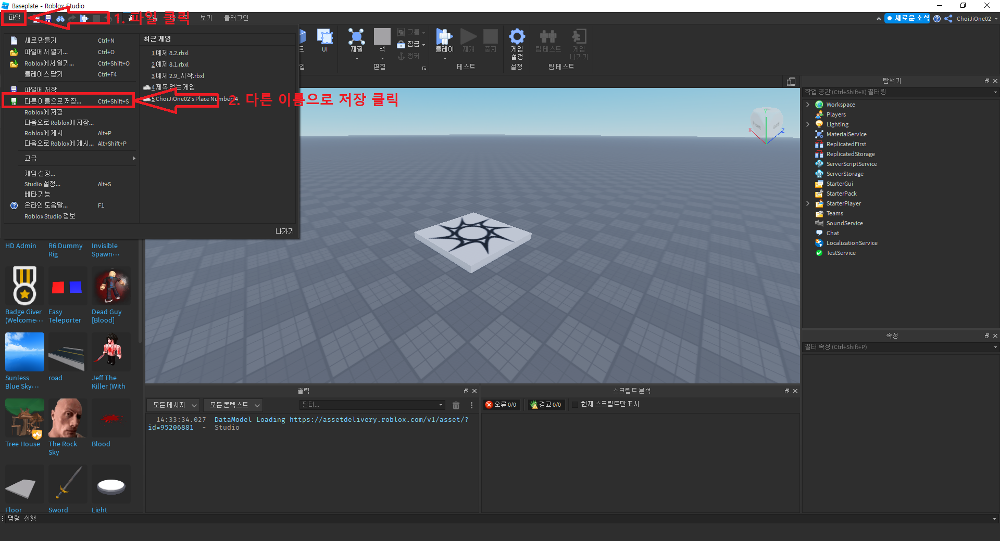
파일 이름을 MiniGame-Obby.rbxl 로 설정한 뒤에 원하는 위치에 저장합니다.
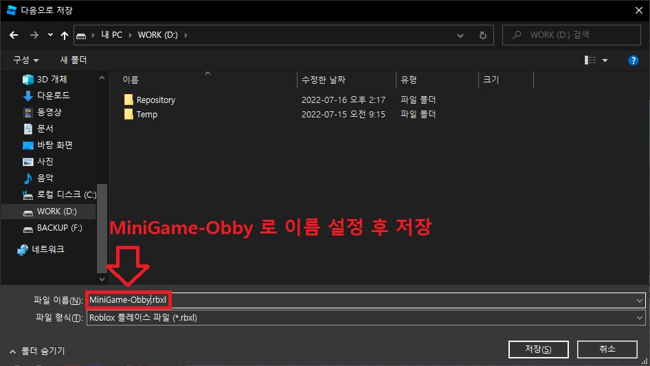
다음으로, 우리가 사용하지 않을 Baseplate를 삭제하도록 하기 위해서 탐색기의 Baseplate를 삭제합니다.
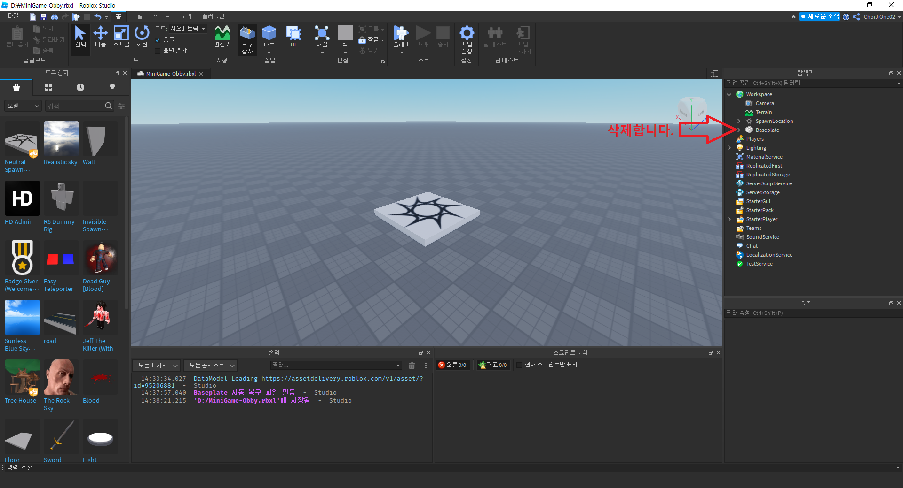
삭제된 Baseplate를 확인합니다.
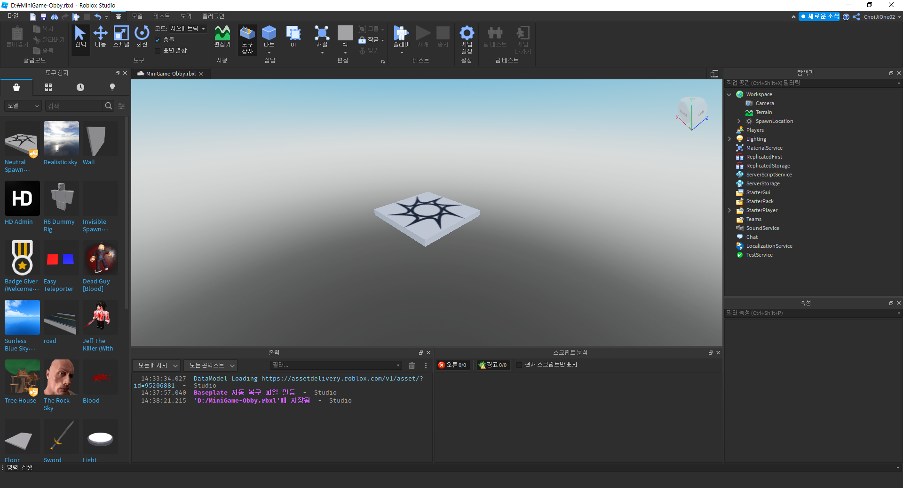
다음으로, SpawnLocation 의 Size를 10, 1, 10, Position을 0, 0, 0 으로 변경합니다.
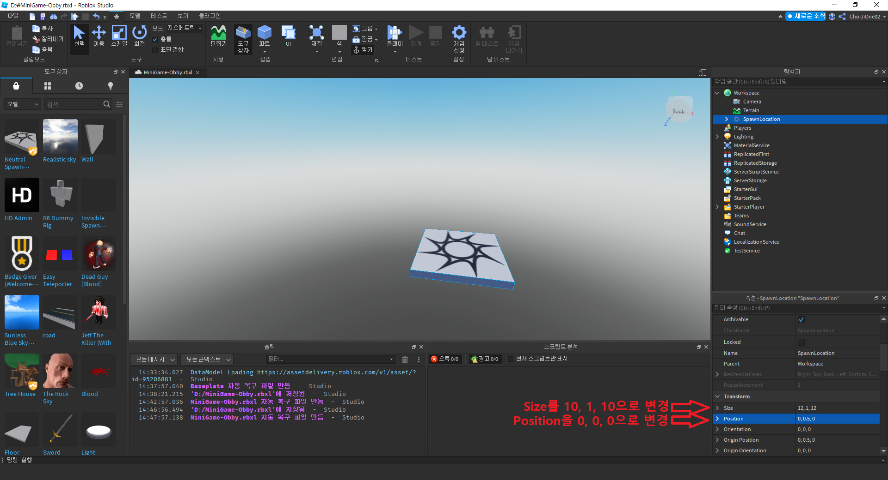
속성창에서 변경된 SpawnLocation의 Size와 Position을 확인합니다.
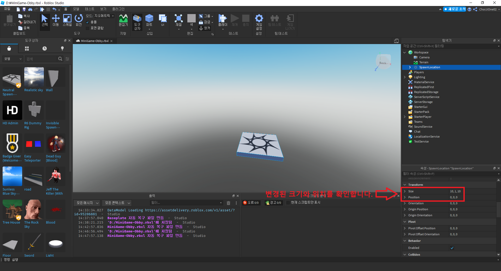
2단계. Floor 구현
다음으로, 게임 진행 중 떨어질 경우 플레이어를 죽이기 위한 Floor를 구현하도록 하겠습니다.
파트 생성
Floor 파트를 생성해보도록 하겠습니다.
아래와 같이 파트를 생성합니다.
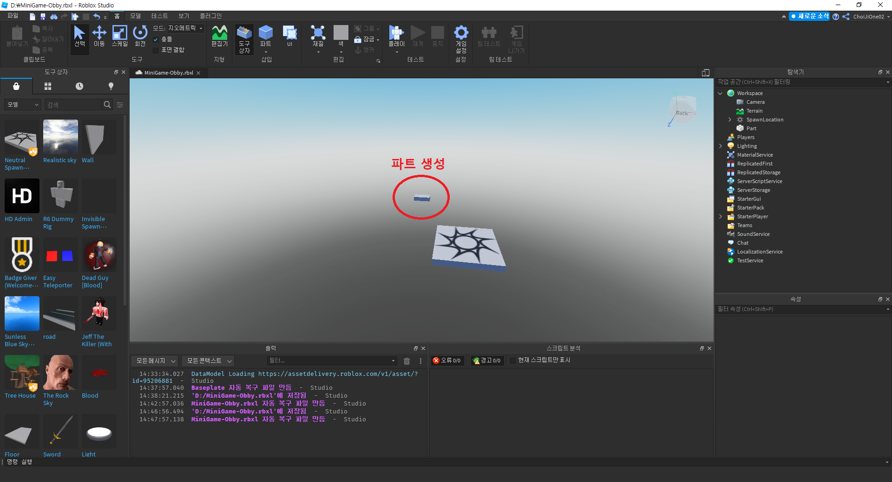
파트를 생성했으면, 파트를 선택한 후 속성창에서 Size를 2024, 1, 2024, Position을 0, -40, 0를 입력합니다.
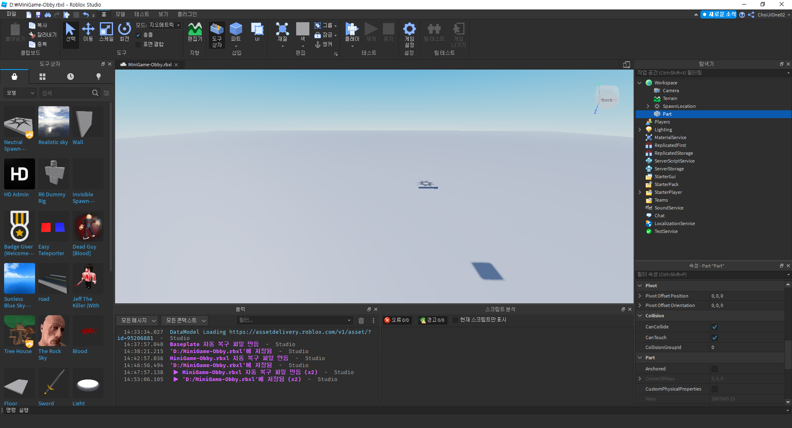
다음으로 속성창에서 Part의 Anchored 에 체크해줍니다.
경고 : 반드시
Part의Anchored에 체크해주어야 합니다. 아니면 게임 시작 시 아래로 떨어지게 됩니다.
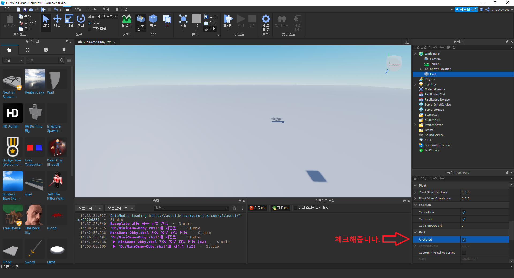
다음으로 속성창에서 Appearance의 BrickColor 를 클릭합니다.
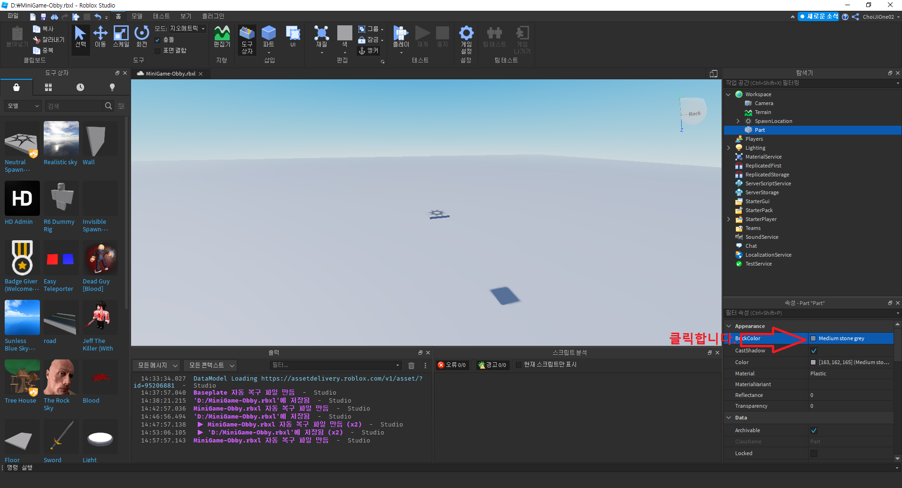
클릭했으면 붉은색 계열의 색상을 클릭합니다.
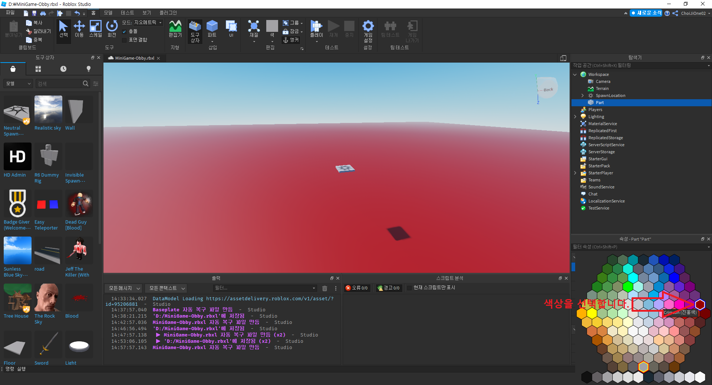
스크립트 구현
이제, 플레이어가 Floor로 떨어졌을 때 죽이기 위한 스크립트를 구현하도록 하겠습니다.
Floor파트 하위에 스크립트를 생성합니다.
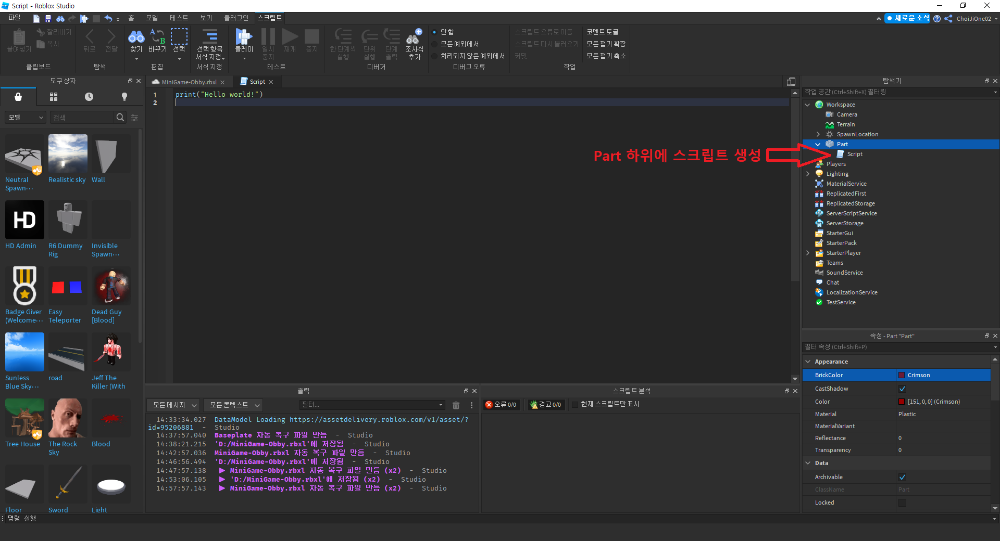
생성된 스크립트에 다음 코드를 타핑합니다.
local function OnTouched(part)
local humanoid = part.Parent:FindFirstChild("Humanoid")
if humanoid then
humanoid.Health = 0
end
end
script.Parent.Touched:Connect(OnTouched)
타이핑을 끝냈으면, 게임을 실행후 일부러 떨어져서 플레이어가 죽는지 확인합니다.
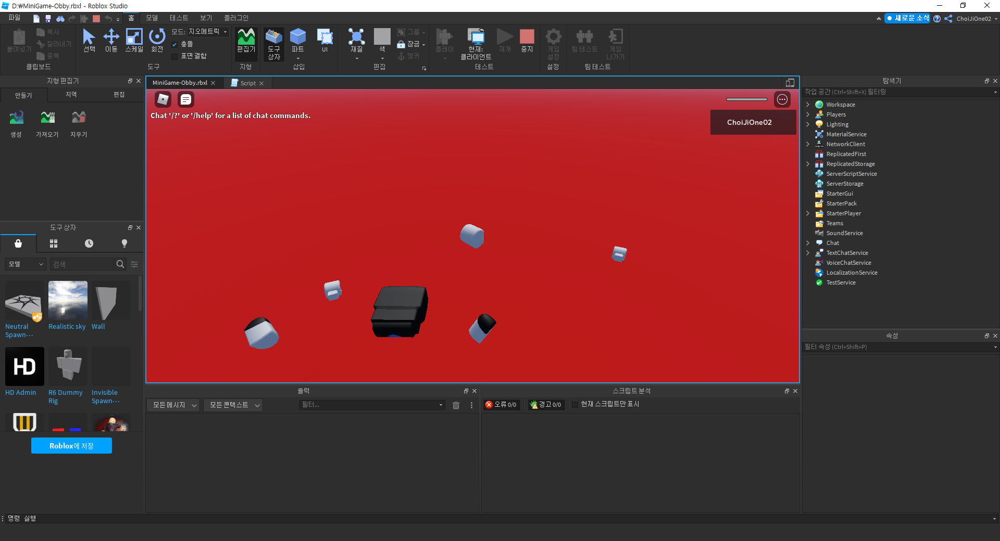
마무리로 Part의 이름을 Floor으로 변경합니다.
변경된 이름을 확인합니다.
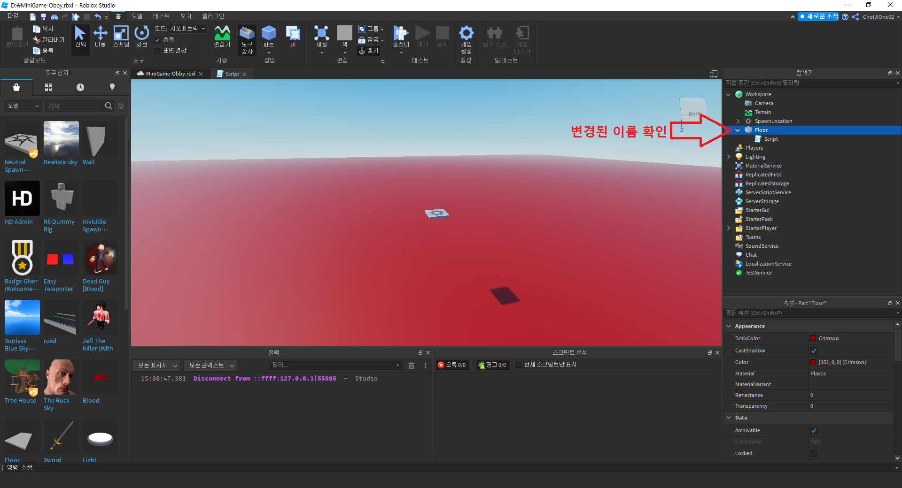
3단계. 사라지는 함정 구현
다음으로, 게임 진행에 필요한 함정 중 사라지는 함정을 구현하도록 하겠습니다.
파트 생성
사라지는 함정을 위한 파트를 생성해보도록 하겠습니다.
아래와 같이 파트를 생성한 뒤 이름을 DisappearTrap 이라고 변경합니다.
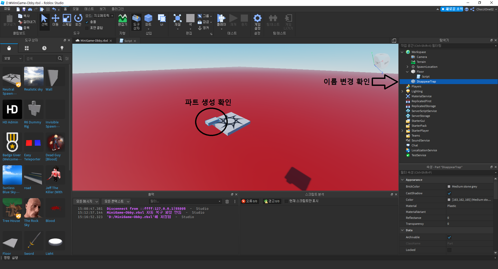
다음으로 파트의 속성을 아래와 같이 변경합니다.
Size : 10, 1, 10
Position : 0, 0, -15
Anchored : 체크
속성을 변경했으면, 속성창 맨 아래의 속성 추가를 클릭합니다.
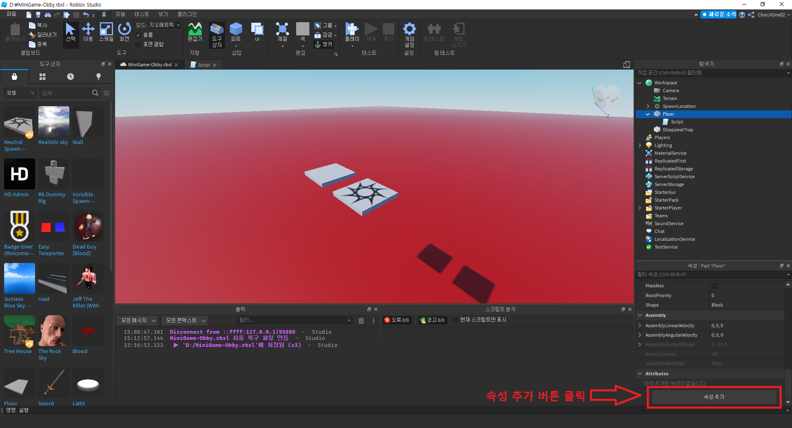
속성 추가 버튼을 클릭했으면 이름에 WaitTime, 유형으로 number를 선택 후 저장 버튼을 클릭합니다.
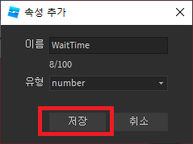
생성했으면, WaitTime을 클릭한 뒤 3으로 설정합니다.
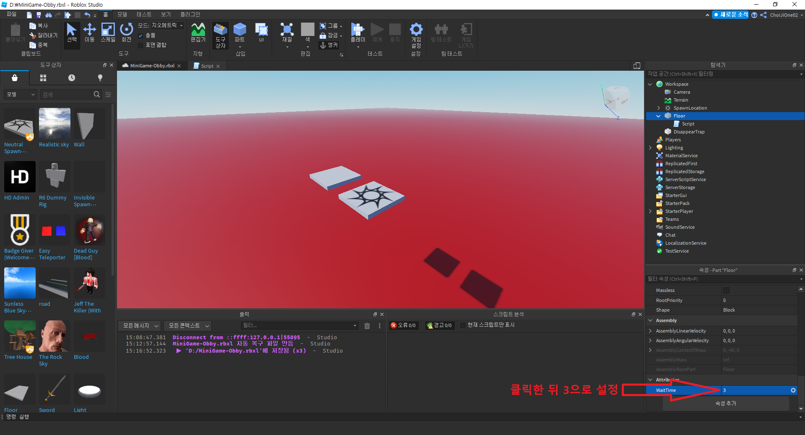
스크립트 구현
이제 특정 만큼 함정이 사라지는 스크립트를 구현하도록 하겠습니다.
DisappearTrap 파트의 하위에 스크립트를 생성한 뒤 다음 코드를 타이핑합니다.
local waitTime = script.Parent:GetAttribute("WaitTime")
while true do
script.Parent.Transparency = 0
script.Parent.CanCollide = true
wait(waitTime)
script.Parent.Transparency = 1
script.Parent.CanCollide = false
wait(waitTime)
end
타이핑을 끝냈으면, 게임을 실행한 후 파트가 사라지는 것을 확인합니다.
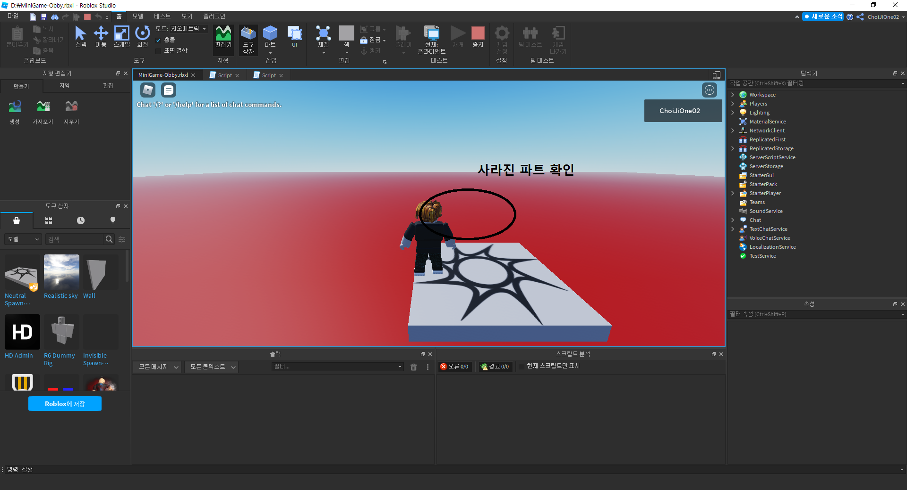
4단계. 불타는 함정 구현
다음으로, 게임 진행에 필요한 함정 중 불타는 함정을 구현하도록 하겠습니다.
파트 생성
불타는 함정을 위한 파트를 생성해보도록 하겠습니다.
아래와 같이 파트를 생성한 뒤 이름을 FireTrap이라고 변경합니다.
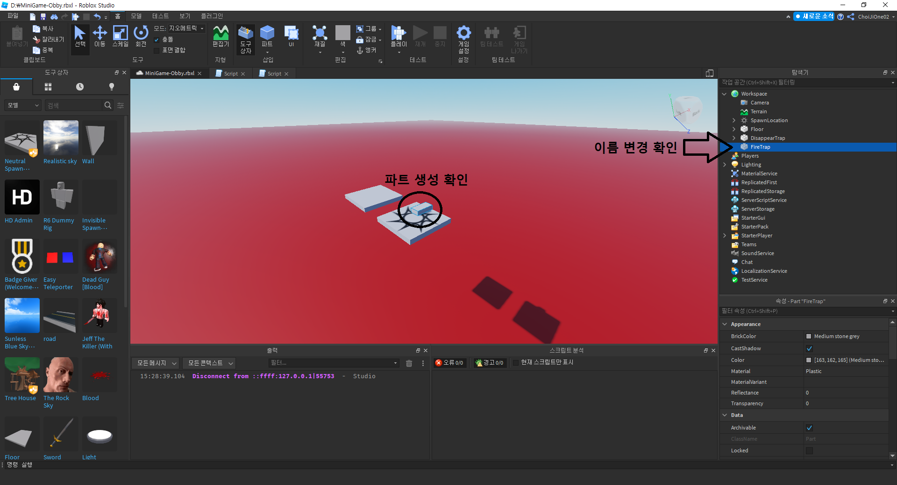
다음으로 파트의 속성을 아래와 같이 변경합니다.
Size : 10, 1, 10
Position : 0, 0, -30
Anchored : 체크
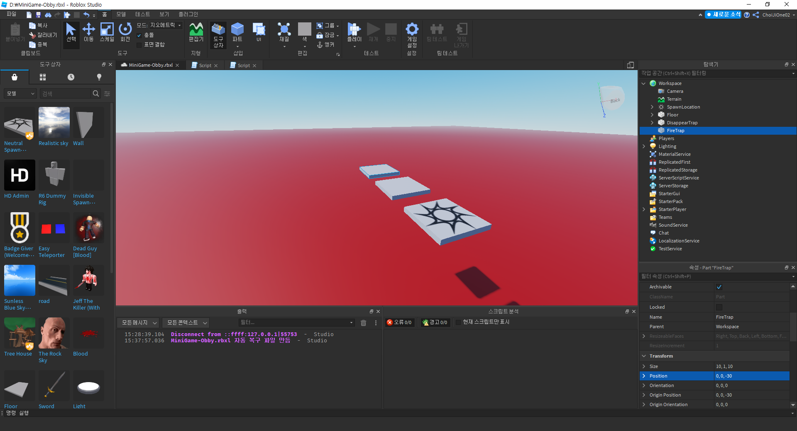
3단계에서의 WaitTime 속성 추가와 같은 절차로 속성을 추가한 후 3으로 설정합니다.
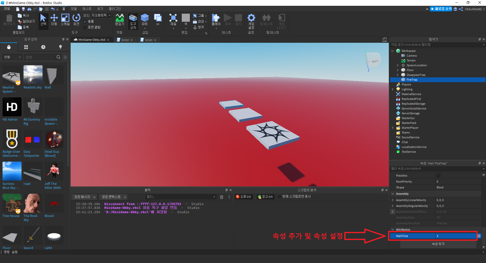
다음으로 FireTrap 하위에 불 효과를 추가해줍니다.
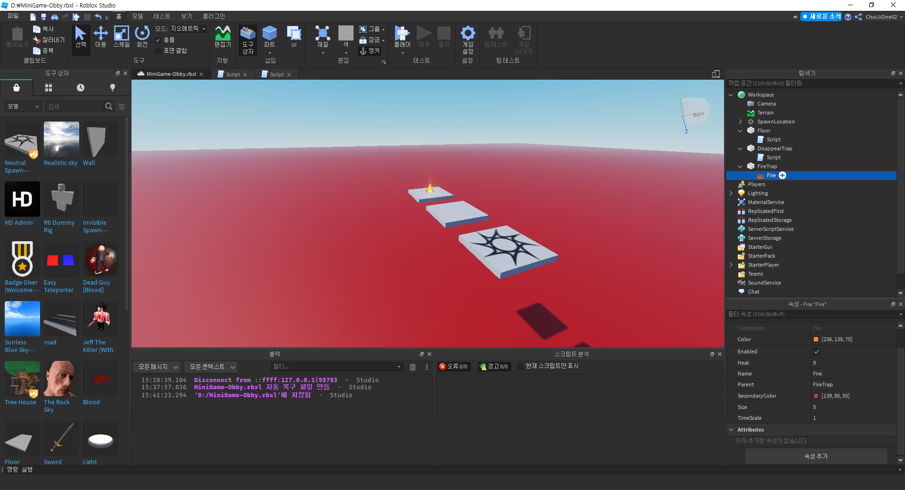
불 효과를 추가했으면 불 효과 선택 후 속성 창의 Enabled의 체크를 해제합니다.
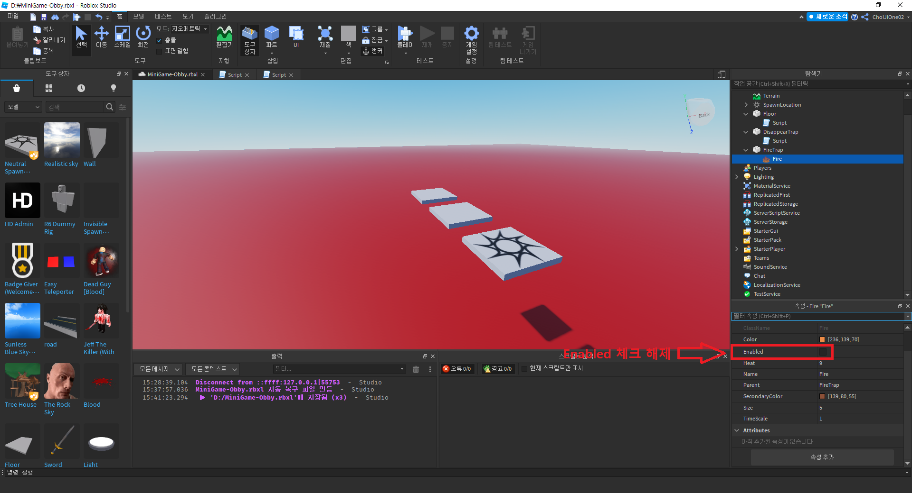
계속해서 속성 창의 Size 를 30으로 설정합니다.
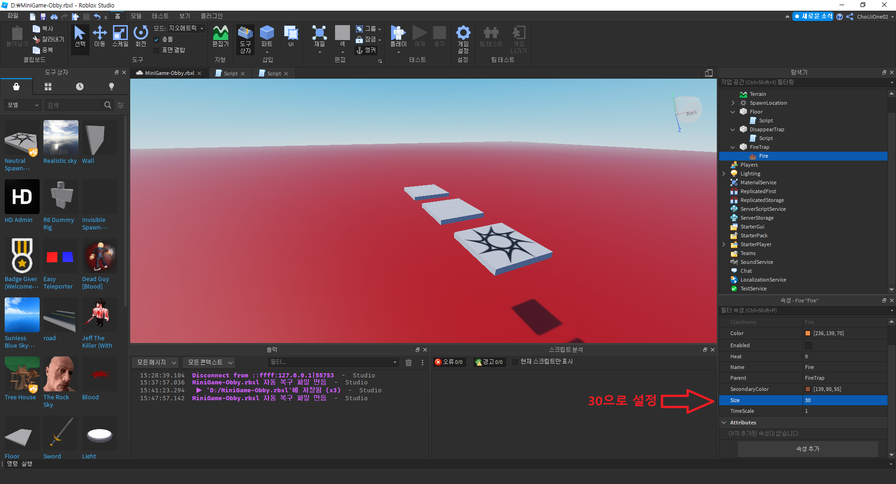
스크립트 구현
이제 불타는 함정을 위한 스크립트를 구현하도록 하겠습니다.
FireTrap 파트의 하위에 스크립트를 생성한 뒤 다음 코드를 타이핑합니다.
local waitTime = script.Parent:GetAttribute("WaitTime")
local bCanKillPlayer = false
local function OnTouched(part)
if bCanKillPlayer then
local humanoid = part.Parent:FindFirstChild("Humanoid")
if humanoid then
humanoid.Health = 0
end
end
end
script.Parent.Touched:Connect(OnTouched)
while true do
script.Parent.Fire.Enabled = true
bCanKillPlayer = true
wait(waitTime)
script.Parent.Fire.Enabled = false
bCanKillPlayer = false
wait(waitTime)
end
타이핑을 끝냈으면, 게임을 실행한 후 불타는 함정을 확인합니다.
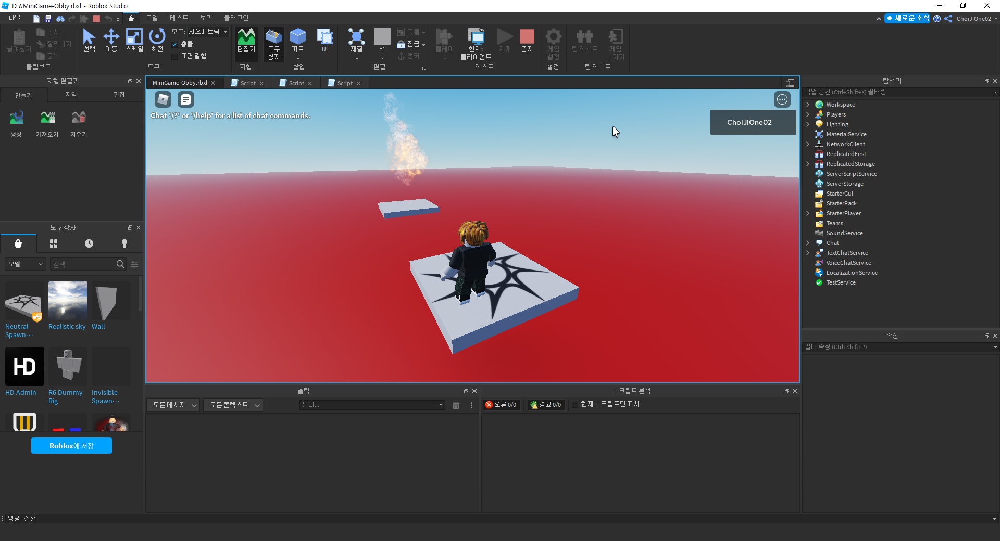
5단계. 크기가 점점 작아지는 함정 구현
다음으로, 게임 진행에 필요한 함정 중 크기가 점점 작아지는 함정을 구현하도록 하겠습니다.
파트 생성
크기가 점점 작아지는 함정을 위한 파트를 생성해보도록 하겠습니다.
파트를 생성한 뒤 이름을 DownSizeTrap이라고 변경한 뒤 파트의 속성을 아래와 같이 변경합니다.
Size : 10, 1, 10
Position : 0, 0, -45
Anchored : 체크
3단계와 4단계에서의 WaitTime 속성 추가와 같은 절차로 속성을 추가한 후 3으로 설정합니다.
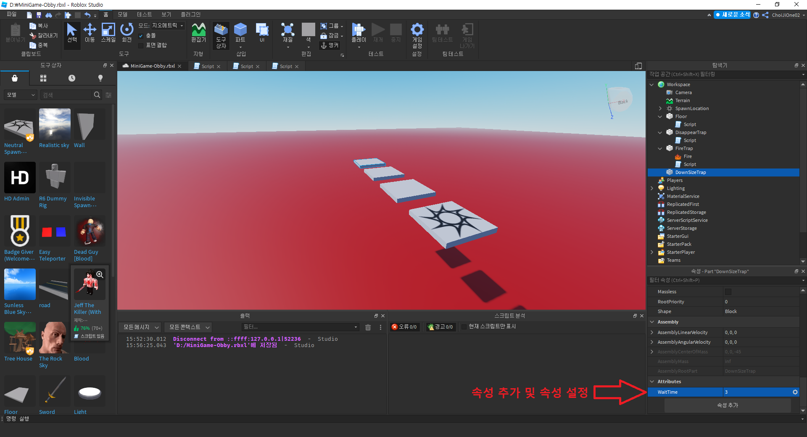
스크립트 구현
크기가 점점 작아지는 함정을 위한 스크립트를 구현하도록 하겠습니다.
DownSizeTrap 파트의 하위에 스크립트를 생성한 뒤 다음 코드를 타이핑합니다.
local waitTime = script.Parent:GetAttribute("WaitTime")
while true do
for size = 10, 0, -2 do
script.Parent.Size = Vector3.new(size, 1, size)
wait(waitTime)
end
end
타이핑을 끝냈으면, 게임을 실행한 후 크기가 점점 작아지는 함정을 확인합니다.
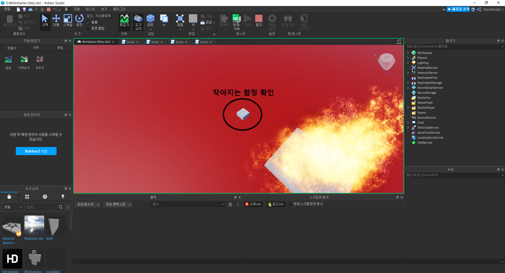
6단계. 강제로 플레이어를 죽이는 함정 구현
다음으로, 게임 진행에 필요한 함정 중 플레이어를 강제로 죽이는 함정을 구현하도록 하겠습니다.
파트 생성
플레이어를 강제로 죽이는 함정을 위한 파트를 생성해보도록 하겠습니다.
파트를 생성한 뒤 이름을 KillTrap이라고 변경한 뒤 파트의 속성을 아래와 같이 변경합니다.
Size : 10, 1, 10
Position : 0, 0, -60
Anchored : 체크
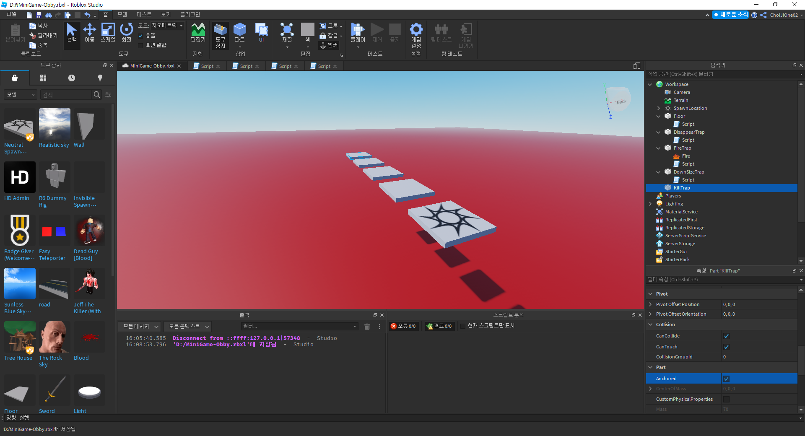
3, 4, 5단계에서의 WaitTime 속성 추가와 같은 절차로 속성을 추가한 후 3으로 설정합니다.
스크립트 구현
플레이어를 강제로 죽이는 함정을 위한 스크립트를 구현하도록 하겠습니다.
KillTrap 파트의 하위에 스크립트를 생성한 뒤 다음 코드를 타이핑합니다.
local waitTime = script.Parent:GetAttribute("WaitTime")
local bCanKillPlayer = false
local function OnTouched(part)
if bCanKillPlayer then
local humanoid = part.Parent:FindFirstChild("Humanoid")
if humanoid then
humanoid.Health = 0
end
end
end
script.Parent.Touched:Connect(OnTouched)
while true do
script.Parent.Color = Color3.fromRGB(255, 0, 0)
bCanKillPlayer = true
wait(waitTime)
script.Parent.Color = Color3.fromRGB(0, 0, 255)
bCanKillPlayer = false
wait(waitTime)
end
타이핑을 끝냈으면, 게임을 실행한 후 플레이어를 강제로 죽이는 함정을 확인합니다.
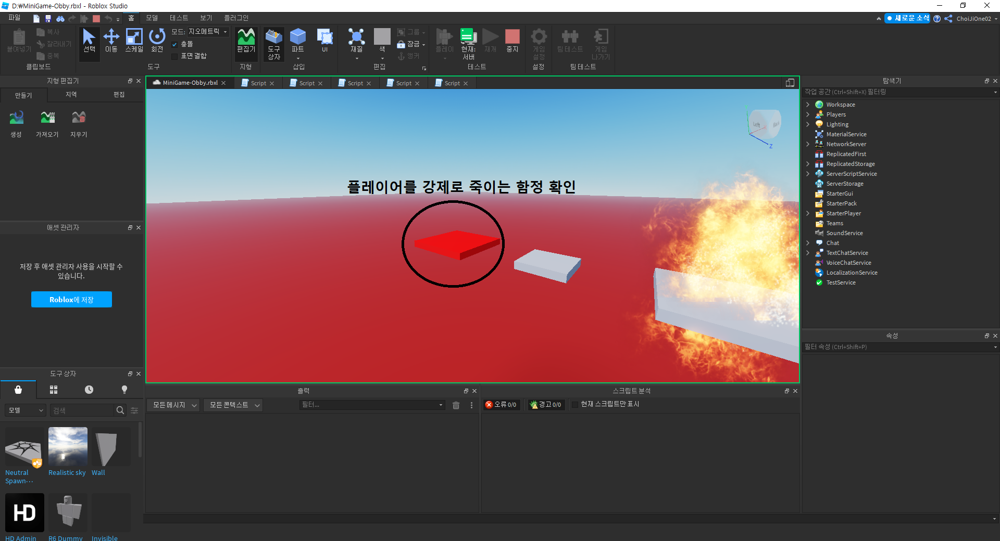
7단계. 처음 위치로 이동시키는 함정 구현
다음으로, 게임 진행에 필요한 함정 중 플레이어를 처음 위치로 이동시키는 함정을 구현하도록 하겠습니다.
파트 생성
플레이어를 처음 위치로 이동시키는 함정을 위한 파트를 생성해보도록 하겠습니다.
파트를 생성한 뒤 이름을 TeleportTrap이라고 변경한 뒤 파트의 속성을 아래와 같이 변경합니다.
Size : 10, 1, 10
Position : 0, 0, -75
Anchored : 체크
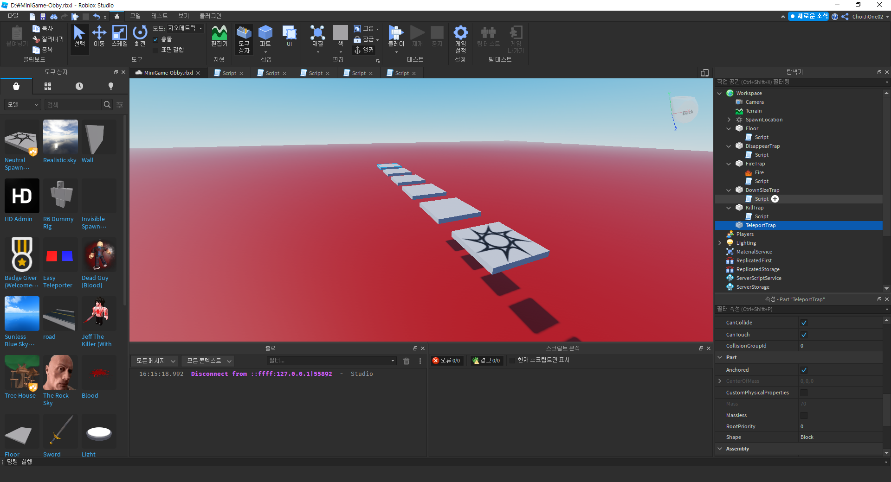
3, 4, 5, 6단계에서의 WaitTime 속성 추가와 같은 절차로 속성을 추가한 후 3으로 설정합니다.
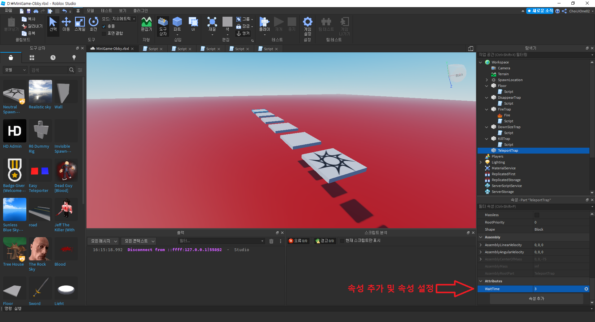
스크립트 구현
플레이어를 처음 위치로 이동시키는 함정을 위한 스크립트를 구현하도록 하겠습니다.
TeleportTrap 파트의 하위에 스크립트를 생성한 뒤 다음 코드를 타이핑합니다.
local waitTime = script.Parent:GetAttribute("WaitTime")
local bCanTeleportPlayer = false
local function OnTouched(part)
if bCanTeleportPlayer then
local humanoid = part.Parent:FindFirstChild("Humanoid")
local spawnLocation = script.Parent.Parent:FindFirstChild("SpawnLocation")
part.Parent:moveTo(spawnLocation.Position)
end
end
script.Parent.Touched:Connect(OnTouched)
while true do
script.Parent.Color = Color3.fromRGB(0, 255, 0)
bCanTeleportPlayer = true
wait(waitTime)
script.Parent.Color = Color3.fromRGB(0, 0, 255)
bCanTeleportPlayer = false
wait(waitTime)
end
타이핑을 끝냈으면, 게임을 실행한 후 플레이어를 처음 위치로 이동시키는 함정을 확인합니다.
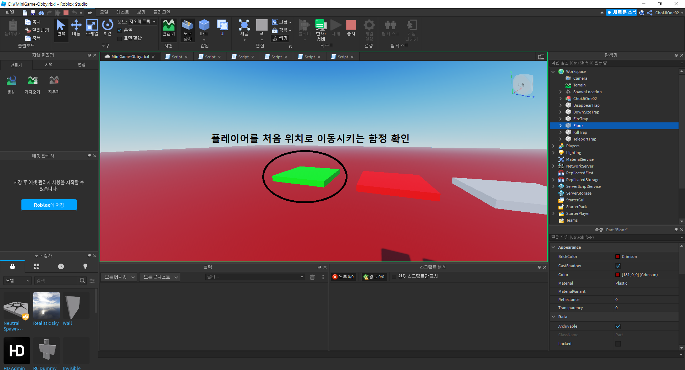